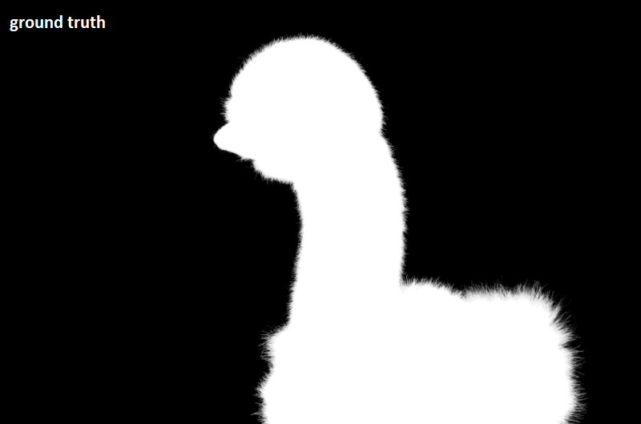
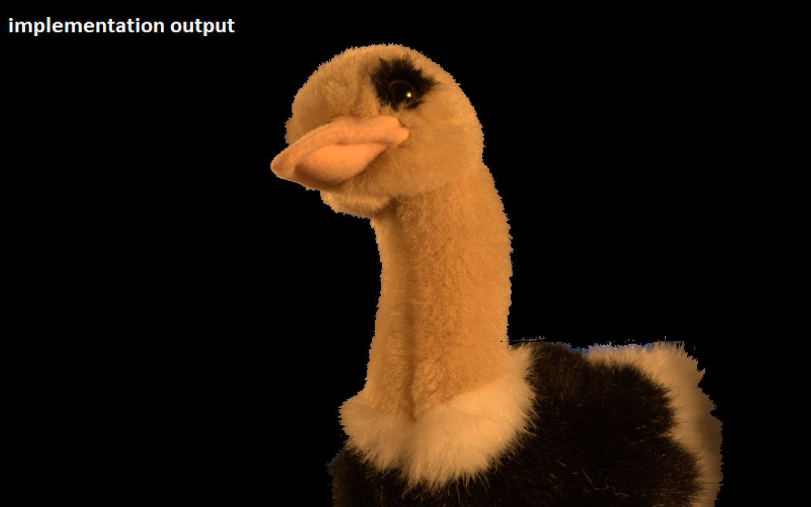

<div class="section-container">
    <div class="container">
      <div class="row">
        <div class="col-xs-12">
          
          <div class="card-container">
            <div class="text-center">
              <h1 class="h2">Bayesian Matting Implemetation</h1>
            </div>
            <p>
                Bayesian matting proposes a solution for matting problems such as
                extracting background and foreground. This implementation has been done based on Chuang et al's <a href="https://ieeexplore.ieee.org/abstract/document/990970">paper.</a> 
                Moreover, multiprocessing features have been used in solving process. It accelerates process significantly.
                Also, GUI makes easier using implementation. Codes can be found <a href="https://github.com/alicamdal/bayesian_matting">here.</a>
            </p>
          </div>
        </div>
         
        
        <div class="col-md-8 col-md-offset-2 section-container-spacer">
          <div class="row">
            <div class="col-xs-12 col-md-6">
                
                
              </div>
              <div class="col-xs-12 col-md-6">
                
                
              </div>
            
          </div>
        </div>
  
        <div class="col-xs-12">
          
        </div>
  
      </div>
    </div>
  </div>
  
  